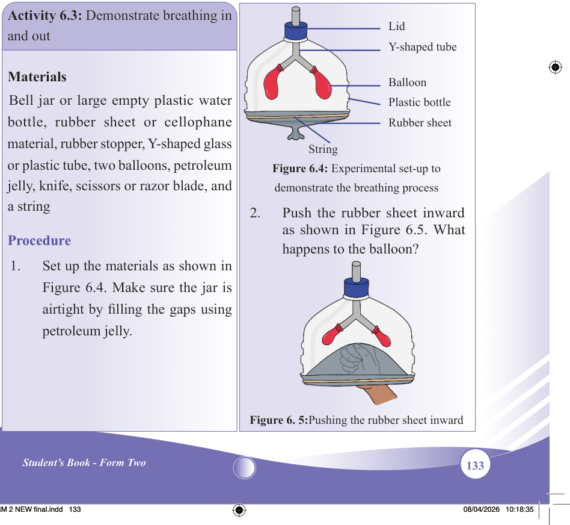
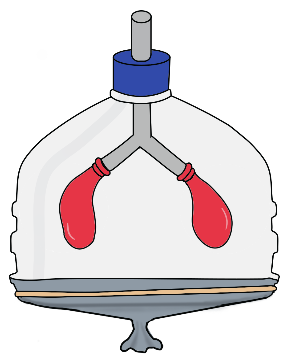
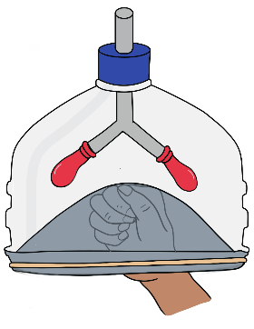

133
Student’s Book - Form Two

Biology for Secondary Schools
Table 6.4: Differences between inhalation and exhalation
Inhalation
Exhalation
(i)
External intercostal muscles contract (i)
External intercostal muscles relax
(ii) Internal intercostal muscles relax
(ii) Internal intercostal muscles contract
(iii) The ribcage moves outward and upward
(iii) The ribcage moves inward and downward
(iv) The diaphragm contracts and flattens (iv) The diaphragm relaxes and becomes dome-shaped
(v) The volume of the thoracic cavity increases as the pressure decreases.
This allows air to enter the lungs
(v) The volume of the thoracic cavity
decreases as pressure increases. This forces air out of the lungs
(vi) Air enters the alveoli through the nostrils, pharynx, glottis, trachea, bronchioles, and finally alveoli
(vi) Air leaves the alveoli through the bronchioles, trachea, glottis, pharynx, and finally nostrils
Activity 6.3: Demonstrate breathing in and out
Materials
Bell jar or large empty plastic water
bottle, rubber sheet or cellophane
material, rubber stopper, Y-shaped glass
or plastic tube, two balloons, petroleum
jelly, knife, scissors or razor blade, and a string
Procedure
1.
Set up the materials as shown in
Figure 6.4. Make sure the jar is
airtight by filling the gaps using petroleum jelly.

Lid
Y-shaped tube
Balloon
Plastic bottle
Rubber sheet
String
Figure 6.4: Experimental set-up to demonstrate the breathing process
2.
Push the rubber sheet inward
as shown in Figure 6.5. What
happens to the balloon?

Figure 6. 5:Pushing the rubber sheet inward
08/04/2026 10:18:35